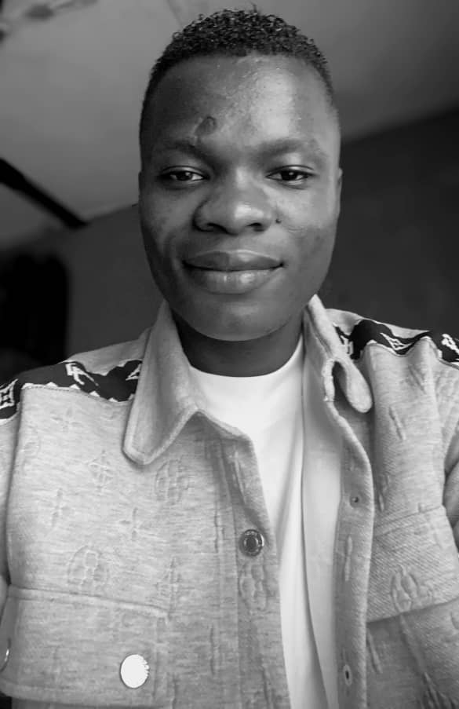

HENRY DANIEL JAMES | WDD130
Welcome to my personal page!
Hello! My name is Henry Daniel James, I was born and raised in Delta State Nigeria but moved to Ogun State Nigeria for my Secondary Education. I enjoy playing football (soccer), table tennis and writing.
I am currently studying web design and development at BYU-Idaho, and I am excited to learn more about creating websites and applications.
I look forward to learning with you all in this course, and hoping to create some amazing projects together!